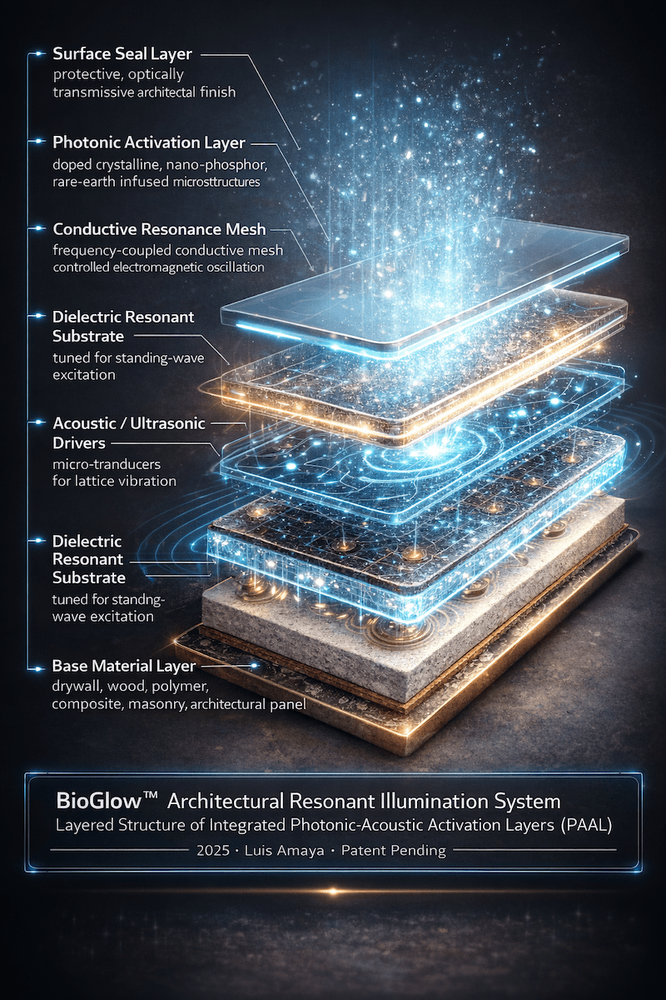

Independent Publication · Architecture · Technology · Research
Original Articles on Architecture, Future Systems, and Design Thinking
HaloCyberLife is an independent publication featuring original writing, concept analysis, visual research, and technology-focused articles on architecture, air systems, energy ideas, sound, and design.
Architecture
Air Purification
Sound & Frequency
System Design
Independent Research
Architecture
Air Purification
Sound & Frequency
System Design
Independent Research
HaloCyberLife™ is actively being developed live.
New systems, articles, visual research, and experimental frameworks are added continuously as the platform evolves.
Featured Articles & Research
Selected writing from HaloCyberLife covering future systems, visual concepts, and original technical thought.


What is HaloCyberLife?
HaloCyberLife is an independent website focused on architecture, emerging technology, environmental systems, sound, design concepts, and visual research.
The site is created and maintained by Luis Amaya and is built around original articles, structured concept exploration, and long-form publishing for readers interested in new systems and future-facing ideas.
- Original articles and concept analysis
- Architecture and environmental design ideas
- Sound, frequency, and systems thinking
- Visual research, diagrams, and technical storytelling
The goal of HaloCyberLife is to make unusual ideas easier to understand through clear writing, better presentation, and organized research.
Site Focus
Primary emphasis: articles, research, and independent publishing.
HaloCyberLife is organized as a content-first knowledge hub where visitors can explore original topics, technical ideas, and visual concept work in one place.
Editorial Focus
HaloCyberLife covers topics where architecture, technology, environment, design, and systems thinking overlap. The site emphasizes original writing, concept exploration, and organized presentation over short-form promotion.
Original Writing
Articles are written to explore ideas in a structured way, giving readers context, practical framing, visual support, and a clearer path through complex concepts.
Research Presentation
Visual concepts, diagrams, and technical themes are presented as part of a larger research narrative so visitors can follow the reasoning behind each topic rather than just viewing isolated images.